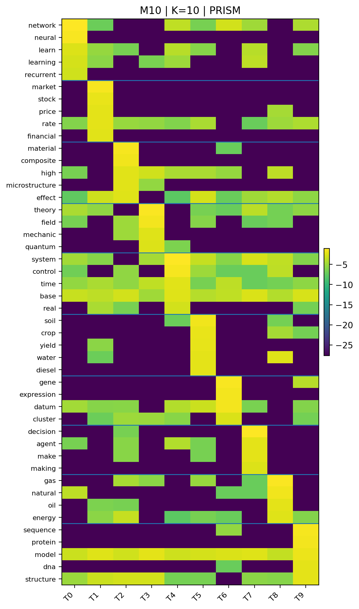
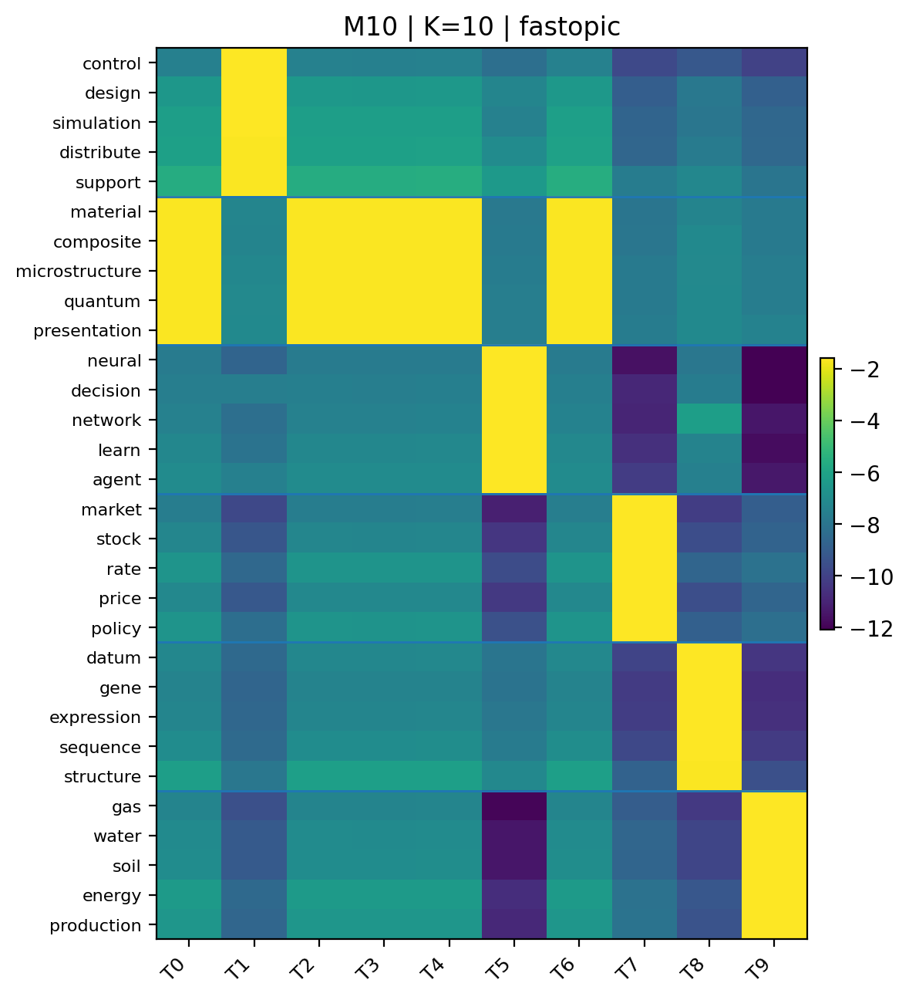
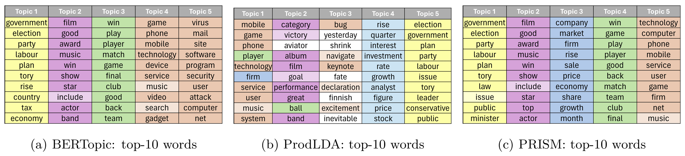

Abstract
Topic modeling seeks to uncover latent semantic structure in text, with LDA providing a foundational probabilistic framework. While many recent methods incorporate external knowledge, such reliance can limit applicability in emerging or underexplored domains. We introduce PRISM, a corpus-intrinsic method that derives a Dirichlet parameter from word co-occurrence statistics to initialize LDA without altering its generative process. Experiments on text and single-cell RNA-seq data show that PRISM improves topic coherence and interpretability, often rivaling externally guided approaches.
Read the paper on OpenReview.
Method
PRISM is a corpus-intrinsic initialization framework for LDA. It first computes a PPMI matrix from document-level co-occurrence, builds a word-similarity graph, and applies diffusion maps to produce corpus-derived embeddings. It then fits a GMM over these embeddings, converts soft memberships into topic-word distributions, estimates a vocabulary-level Dirichlet prior, and initializes MALLET LDA with that prior while keeping the LDA generative process unchanged.
Results
Heatmaps


Example topic comparison

Installation
1) Clone the repository
git clone https://github.com/shaham-lab/PRISM.git
cd PRISM2) Create a virtual environment and install dependencies
python -m venv .venv
source .venv/bin/activate
pip install -r requirements.txt3) Build the patched MALLET dependency
This repository includes a patched MALLET source tree under beta_vector_patch/mallet. Make sure your local MALLET build
supports the vector-valued prior expected by PRISM before running the full pipeline.
4) Verify the dataset layout
data/
├── 20NewsGroup.json
├── BBC.json
├── M10.json
├── DBLP.json
└── TrumpTweets.jsonQuickstart
Run the pipeline from the repository root.
1) Create corpus-intrinsic word embeddings
python create_word_embeddings.py \
--n_comp 5 \
--dataset BBC \
--metrics prism2) Estimate the Dirichlet prior
python methods_of_moments.py \
--n_comp 5 \
--dataset BBC \
--metric prism3) Run LDA with the informative prior
python main.py \
--n_comp 20 \
--dataset 20NewsGroup \
--metric prism \
--num_iterations 1000 \
--run_number FINAL \
--seed 0Citation
@article{ishon2026prism,
title={PRISM: PRIor from corpus Statistics for topic Modeling},
author={Ishon, Tal and Goldberg, Yoav and Shaham, Uri},
journal={Transactions on Machine Learning Research (TMLR)},
year={2026},
note={OpenReview: https://openreview.net/forum?id=454v3Xbtza¬eId=nHPRY2Dqz7}
}